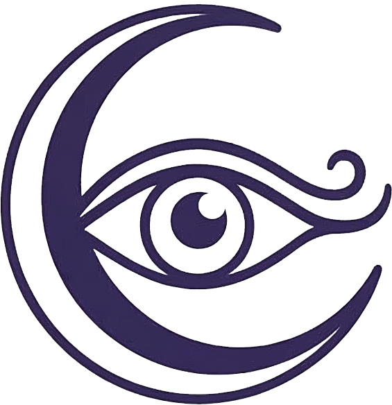

지안 타로
11.10 금요일 🌙 2°
타로마스터 지안이
당신의 운세를
읽어 드릴게요.
오늘 하루,
나의 운세 흐름을 확인해 보세요!
오늘의 운세 보기 〉
오늘의 타로 공부
🗃︎
주역타로 64괘 한 눈에 공부하기 >
🧙♀️
유니버셜 웨이트 카드 공부하기 >
⭐
호로스코프 벨린 카드 공부하기 >
☰
피드
🔮
오늘의 운세
🗃︎
주역타로
🧙♀️
유니버셜
⭐
벨린